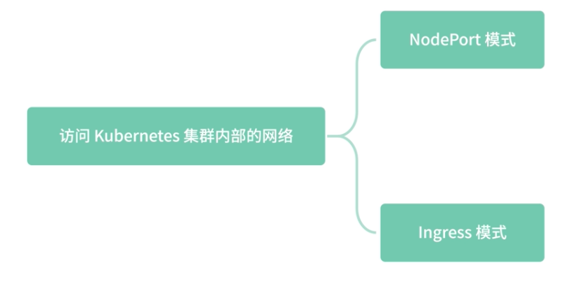
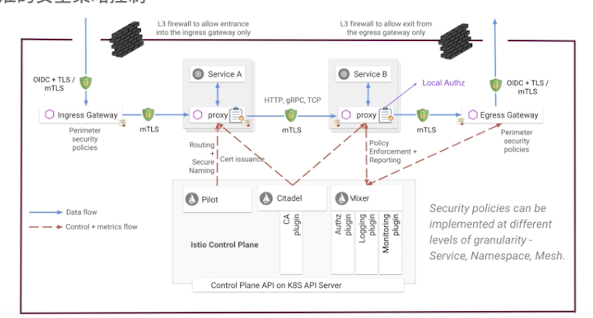

第五节 Ingress 和 Egress：入口流量和出口流量控制
Ingress 是 Kubernetes 集群为了让外部可以访问，引入的一种资源类型。
一般 Ingress 为常见的 Nginx 这样的反向代理服务器提供具体功能，诸如负载均衡、SSL 证书卸载，以及基于名称的虚拟主机功能。这些功能是反向代理服务器的基本功能，
Ingress 可以理解为入口网关，而 Egress 和 Ingress 的功能相仿，只是流量的代理流向不同，Egress 负责出口流量的代理。
1、为什么需要 Ingress
一般来说有两种常用的方式访问 Kubernetes 集群内部的网络，分别是NodePort 模式和 Ingress 模式。

1-1 NodePort 模式
在 Kubernetes 集群内部，我们可以通过 Service 的域名访问服务的 Pod。下面是一个简单的 YAML 配置，这个配置可以让集群外部通过 NodePort 的方式访问集群内部的资源：
apiVersion: v1
kind: Service
metadata:
name: my-service
spec:
type: NodePort
selector:
app: MyApp
ports:
# 默认情况下，为了方便起见，`targetPort` 被设置为与 `port` 字段相同的值
- port: 80
targetPort: 80
# 可选字段
# 默认情况下，为了方便起见，Kubernetes 控制平面会从某个范围内分配一个端口号（默认：30000-32767）
nodePort: 30007
NodePort 的默认端口范围是 30000-32767，但是一般不建议应用程序使用这个端口范围，以免引发冲突。
如上示例，集群外部首先访问 NodePort 的端口，示例中端口为 30007，通过 IPVS 一系列的劫持路由操作，将流量路由到集群内部的 my-service 服务的端口 80，这个端口是 ClusterIP 暴露出来的端口，在 Kubernetes 集群内部可以通过 ClusterIP:Port的方式访问 my-service 服务。
Kubernetes 集群内部会通过服务发现的方式，将流量转发到服务对应的 Pod IP 的 TargetPort 上面。
通过几台特定的 Node 机器做数据转发，一旦流量增加，可能会影响该机器宿主机的稳定性。如果集群对外暴露多个服务，维护的难度也随之增加，上面提到的扩缩容问题，会被数倍放大：
一台 Node 机器的变动，需要修改大量的入口服务配置。
1-2 Ingress 模式
客户端通过 Ingress 上定义的路由规则，转发到特定的 Service 上面，比如通过设置 path、header、host 等路由规则来决定具体转发到哪个 Service。
通过下面的配置你可以看到，Ingress 是一种全新的资源类型，与所有其他 Kubernetes 资源一样，Ingress 需要使用 apiVersion、kind 和 metadata 字段。
apiVersion: networking.Kubernetes.io/v1
kind: Ingress
metadata:
name: minimal-ingress
annotations:
nginx.ingress.kubernetes.io/rewrite-target: /
spec:
rules:
- http:
paths:
- path: /testpath
pathType: Prefix
backend:
service:
name: test
port:
number: 80
我们来看一下， Ingress 资源类型特有的几个字段的含义。
host：可选择和域名匹配的 host，比如如果设置 host 字段foo.bar.com，则需要通过 foo.bar.com 的域名访问。如果这个例子中没有设置 host 字段，则表明任何域名过来的请求都可以匹配。http.paths.path：用于请求 path 的匹配，比如这个例子通过 pathType:Prefix 前缀匹配的方式，所有 path 中前缀为/testpath的路径，都会被匹配到；而其他没有匹配到的 path 就会返回 404。http.paths.backend：其中 name 字段表示服务名，这个服务名和 Kubernetes 中的Service 名称相匹配；port 则是 Service 的端口号，流量会通过 clusterIP:port 的方式被转发到特定服务。
2、IngressClass 资源类型
在 Kubernetes1.18 版本之前，IngressClass 是通过 Ingress 中的一个 kubernetes.io/ingress.class注解来指定的，下面我们来看一下从 1.18 开始如何配置 Ingress Class。
通过在 Ingress 资源类型中设置 IngressClassName 来指定特定的 IngressClass 配置，IngressClass 的配置如下，其中包含了 ingress-controller 的名称，
在这里 ingress-controller 名称为example.com/ingress-controller：
apiVersion: networking.k8s.io/v1
kind: IngressClass
metadata:
name: external-lb
spec:
controller: example.com/ingress-controller
parameters:
apiGroup: k8s.example.com
kind: IngressParameters
name: external-lb
2-1 ingress-controller
ingress-controller 并不是随着 Kubernetes 集群一起启动的，下面我们先来看一下如何在 Minukube 环境中使用 Nginx ingress-controller。
启动 Minukube 集群，需要先删除已有的 Minukube 集群：
minikube delete
然后通过虚拟机方式启动，因为 Ingress 的 Addon 无法在 Docker 模式使用：
minikube start --kubernetes-version=v1.19.2 --vm=true
启动 ingress-controller ：
minikube addons enable ingress
部署 helloapp：
kubectl create deployment web --image=gcr.io/google-samples/hello-app:1.0
创建 Ingress 资源：
kubectl apply -f https://k8s.io/examples/service/networking/example-ingress.yaml
通过 minikube iP 命令获取 Ip 地址，并修改 /etc/hosts，将其添加在文件结尾，代码中 127.0.0.1 就是 minikube ip 获取的 IP：
127.0.0.1 hello-world.info
通过 cURL 或者浏览器访问 hello-world.info：
curl hello-world.info
至此，Kubernetes 原生的 Ingress 就讲完了。
Ingress 解决了 NodePod 配置不方便的问题，但通过 YAML 的方式控制 Ingress 依然是一件麻烦事，另外 Ingress 内部依然是使用 ClusterIP 的方式来访问 Service，而这样的方式是通过 IPVS 四层转发做到的。
3、Istio Gateway
Istio 采用了一种新的模型——Istio Gateway 来代替 Kubernetes 中的 Ingress 资源类型。
Gateway 允许外部流量访问内部服务，得益于 Istio 强大的控制面配置，Gateway 资源类型的配置非常简单，只需要配置流量转发即可。
minikube delete
minikube start --kubernetes-version=v1.19.2 --driver=docker
minikube tunnel
这样外部就可以通过 Minikube IP 访问集群内部的资源了。
下面进入 Istio 目录，部署一个测试服务：
kubectl apply -f samples/httpbin/httpbin.yaml
通过命令查看 Pod 是否成功启动，根据机器配置不同，这里的 Pod 启动可能需要一定的时间，请耐心等待 pod 启动成功：
$ kubectl get pods
NAME READY STATUS RESTARTS AGE
details-v1-79c697d759-gt9th 2/2 Running 7 95d
httpbin-74fb669cc6-jzs87 0/2 Init:0/1 0 7s
productpage-v1-65576bb7bf-wjkjm 2/2 Running 7 95d
ratings-v1-7d99676f7f-h9blt 2/2 Running 6 95d
reviews-v1-987d495c-pmnb9 2/2 Running 7 95d
reviews-v2-6c5bf657cf-qd2kr 2/2 Running 7 95d
reviews-v3-5f7b9f4f77-gnv4c 2/2 Running 7 95d
创建 Istio Gateway，注意：这里设置了 hosts 为 httpbin.example.com，也就是只有 host 为httpbin.example.com 才能正确访问 httpbin 的服务：
kubectl apply -f - <<EOF
apiVersion: networking.istio.io/v1alpha3
kind: Gateway
metadata:
name: httpbin-gateway
spec:
selector:
istio: ingressgateway # use Istio default gateway implementation
servers:
- port:
number: 80
name: http
protocol: HTTP
hosts:
- "httpbin.example.com"
EOF
将 httpbin 服务暴露给 Istio Gateway，其中 destination 中的 host 字段为 Istio Service 配置中的服务名，Envoy 会通过服务发现的方式将流量路由到 httpbin 对应的 Pod IP：
kubectl apply -f - <<EOF
apiVersion: networking.istio.io/v1alpha3
kind: VirtualService
metadata:
name: httpbin
spec:
hosts:
- "httpbin.example.com"
gateways:
- httpbin-gateway
http:
- match:
- uri:
prefix: /status
- uri:
prefix: /delay
route:
- destination:
port:
number: 8000
host: httpbin
EOF
接下来，我们通过 cURL 访问特定的 URL Path 就可以访问该服务了，这里需要注意的是：
需要设置 host 为httpbin.example.com。因为在前面的 Gateway 配置中，我们绑定了 host，当然你也可以通过修改 /etc/hosts 来绑定域名为本地地址：
curl -I -HHost:httpbin.example.com http://127.0.0.1/status/200
HTTP/1.1 200 OK
server: istio-envoy
date: Mon, 08 Feb 2021 04:42:54 GMT
content-type: text/html; charset=utf-8
access-control-allow-origin: *
access-control-allow-credentials: true
content-length: 0
x-envoy-upstream-service-time: 327
如果没有匹配到路由规则，则会返回404：
$ curl -I -HHost:httpbin.example.com http://127.0.0.1/1status/200
HTTP/1.1 404 Not Found
date: Mon, 08 Feb 2021 04:45:50 GMT
server: istio-envoy
transfer-encoding: chunked
通过命令查看 Envoy 日志，这里的 httpbin-74fb669cc6-jzs87 是通过上面 kubectl get pods 命令获取到的 Pod 名称，需要加上 -c container 的名称来查看 Envoy 的日志：
kubectl logs httpbin-74fb669cc6-jzs87 -c istio-proxy
这里我列了几条刚才访问产生的 Envoy 日志，你可以看到有正确的 200 日志和错误的 404 日志：
2021-02-08T04:29:17.701261Z info Envoy proxy is ready
[2021-02-08T04:42:54.644Z] "HEAD /status/200 HTTP/1.1" 200 - "-" "-" 0 0 225 199 "172.17.0.2" "curl/7.54.0" "be1d93ab-32b3-9882-8c34-87dd39ddf6ab" "httpbin.example.com" "127.0.0.1:80" inbound|8000|http|httpbin.default.svc.cluster.local 127.0.0.1:34580 172.18.0.16:80 172.17.0.2:0 outbound_.8000_._.httpbin.default.svc.cluster.local default
[2021-02-08T04:45:14.862Z] "HEAD /status2/200 HTTP/1.1" 404 - "-" "-" 0 0 351 337 "172.17.0.2" "curl/7.54.0" "b433ee7d-6f89-9854-bee7-eeed33884003" "httpbin.example.com" "127.0.0.1:80" inbound|8000|http|httpbin.default.svc.cluster.local 127.0.0.1:36896 172.18.0.16:80 172.17.0.2:0 outbound_.8000_._.httpbin.default.svc.cluster.local default
[2021-02-08T04:45:57.688Z] "HEAD /status/500 HTTP/1.1" 500 - "-" "-" 0 0 14 11 "172.17.0.2" "curl/7.54.0" "5ca2dbf4-473f-9dd0-97a0-397a98f2805c" "httpbin.example.com" "127.0.0.1:80" inbound|8000|http|httpbin.default.svc.cluster.local 127.0.0.1:37604 172.18.0.16:80 172.17.0.2:0 outbound_.8000_._.httpbin.default.svc.cluster.local default
[2021-02-08T04:46:04.233Z] "HEAD /status/400 HTTP/1.1" 400 - "-" "-" 0 0 3 2 "172.17.0.2" "curl/7.54.0" "4c6e9a80-74f4-98bb-ba3e-8140a4a16099" "httpbin.example.com" "127.0.0.1:80" inbound|8000|http|httpbin.default.svc.cluster.local 127.0.0.1:37722 172.18.0.16:80 172.17.0.2:0 outbound_.8000_._.httpbin.default.svc.cluster.local default
[2021-02-08T04:53:33.695Z] "HEAD /status/500 HTTP/1.1" 500 - "-" "-" 0 0 4 2 "172.17.0.2" "curl/7.54.0" "6865f4bf-c407-9fa2-a6e2-f14668a9ba63" "httpbin.example.com" "127.0.0.1:80" inbound|8000|http|httpbin.default.svc.cluster.local 127.0.0.1:45104 172.18.0.16:80 172.17.0.2:0 outbound_.8000_._.httpbin.default.svc.cluster.local default
最后，可以通过命令，清除 httpbin 服务和相关的 Istio Gateway 配置：
$ kubectl delete gateway httpbin-gateway
$ kubectl delete virtualservice httpbin
$ kubectl delete --ignore-not-found=true -f samples/httpbin/httpbin.yaml
Gateway 类型利用 Envoy 的强大功能，可以实现路由层丰富的配置。这些功能和网格内部提供的功能、配置方式一样，包括熔断、丰富的负载均衡策略、服务发现、金丝雀发布等，通过服务发现的方式你也可以解决 Kubernetes Ingress 四层路由的缺陷。
4、Egress 出口流量
Egress 出口流量是云原生引入的新的设计模式和架构，在传统的 Web 架构中，很少有出口网关的概念。
4-1 Kubernetes 中的 Egress
相较于 Kubernetes 中 Ingress 的强大功能，Kubernetes 中的 Egress 就显得比较弱了，Kubernetes 的 Egress 并没有引入像 Nginx 这样的七层负载均衡器，只是在 IP 地址或端口层面（OSI 第 3 层或第 4 层）控制网络流量。
通过 Network Policy 的资源，可以配置在三层或者四层网络的 Ingress 或者 Egress 策略。这里的配置设置了一些 IP 和端口的黑白名单：
apiVersion: networking.k8s.io/v1
kind: NetworkPolicy
metadata:
name: test-network-policy
namespace: default
spec:
podSelector:
matchLabels:
role: db
policyTypes:
- Ingress
- Egress
ingress:
- from:
- ipBlock:
cidr: 172.17.0.0/16
except:
- 172.17.1.0/24
- namespaceSelector:
matchLabels:
project: myproject
- podSelector:
matchLabels:
role: frontend
ports:
- protocol: TCP
port: 6379
egress:
- to:
- ipBlock:
cidr: 10.0.0.0/24
ports:
- protocol: TCP
port: 5978
4-2 Istio Egress
Istio Egress 和 Kubernetes 中的 Egress 不同，Istio的 Egress 本质上是一个 Envoy Proxy，通过 Envoy 强大的七层代理功能，提供丰富的路由策略，
而不局限于简单的四层网络 IP 端口黑白名单的配置。
通过下面的架构图，你可以看到每个服务的本地 Proxy 可以通过连接到 Egress Gateway 访问外部服务，达到精准的安全策略控制。

首先创建一个新的服务 Sleep：
$ kubectl apply -f samples/sleep/sleep.yaml
$ kubectl get all | grep sleep
pod/sleep-557747455f-w95vv 2/2 Running 0 58s
service/sleep ClusterIP 10.100.21.83 <none> 80/TCP 58s
deployment.apps/sleep 1/1 1 1 58s
replicaset.apps/sleep-557747455f 1 1 1 58s
设置 Pod 的环境变量：
export SOURCE_POD=$(kubectl get pod -l app=sleep -o jsonpath={.items..metadata.name})
$ kubectl get pod -l app=sleep -o jsonpath={.items..metadata.name}
sleep-557747455f-w95vv
export SOURCE_POD=sleep-557747455f-w95vv
在设置策略之前，我们先尝试从 Pod 内部访问外部服务：
kubectl exec -it $SOURCE_POD -c sleep -- curl -I https://www.douban.com | grep "HTTP/";
kubectl exec -it $SOURCE_POD -c sleep -- curl -I https://edition.cnn.com | grep "HTTP/"
可以得到以下结果，表明访问外部正常：
HTTP/1.1 200 OK
HTTP/2 200
$ kubectl exec -it $SOURCE_POD -c sleep -- curl -I https://www.douban.com | grep "HTTP/";
HTTP/1.1 200 OK
通过下述命令，查看 Istio Egress Gateway 是否部署：
$ kubectl get pod -l istio=egressgateway -n istio-system
NAME READY STATUS RESTARTS AGE
istio-egressgateway-5547fcc8fc-flqkt 1/1 Running 2 13d
创建一个 ServiceEntry，允许流量直接访问一个外部服务
kubectl apply -f - <<EOF
apiVersion: networking.istio.io/v1alpha3
kind: ServiceEntry
metadata:
name: cnn
spec:
hosts:
- edition.cnn.com
ports:
- number: 80
name: http-port
protocol: HTTP
- number: 443
name: https
protocol: HTTPS
resolution: DNS
EOF
为 edition.cnn.com 端口80 创建 Egress Gateway，并为指向 Egress Gateway 的流量创建一个 Destination Rule：
$ kubectl apply -f - <<EOF
apiVersion: networking.istio.io/v1alpha3
kind: Gateway
metadata:
name: istio-egressgateway
spec:
selector:
istio: egressgateway
servers:
- port:
number: 80
name: http
protocol: HTTP
hosts:
- edition.cnn.com
---
apiVersion: networking.istio.io/v1alpha3
kind: DestinationRule
metadata:
name: egressgateway-for-cnn
spec:
host: istio-egressgateway.istio-system.svc.cluster.local
subsets:
- name: cnn
EOF
定义一个 VirtualService，将流量从 Sidecar 引导至 Egress Gateway，再从 Egress Gateway 引导至外部服务：
$ kubectl apply -f - <<EOF
apiVersion: networking.istio.io/v1alpha3
kind: VirtualService
metadata:
name: direct-cnn-through-egress-gateway
spec:
hosts:
- edition.cnn.com
gateways:
- istio-egressgateway
- mesh
http:
- match:
- gateways:
- mesh
port: 80
route:
- destination:
host: istio-egressgateway.istio-system.svc.cluster.local
subset: cnn
port:
number: 80
weight: 100
- match:
- gateways:
- istio-egressgateway
port: 80
route:
- destination:
host: edition.cnn.com
port:
number: 80
weight: 100
EOF
查看 istio-egressgateway 日志：
kubectl logs -l istio=egressgateway -c istio-proxy -n istio-system | tail
可以看到如下日志，表明流量经过了 Egress Gateway：
[2021-02-08T06:02:46.098Z] "GET /politics HTTP/2" 301 - "-" "-" 0 0 162 147 "172.18.0.17" "curl/7.69.1" "57d13492-b521-961b-bd93-90ab3f0e295e" "edition.cnn.com" "151.101.129.67:80" outbound|80||edition.cnn.com 172.18.0.4:41758 172.18.0.4:8080 172.18.0.17:32816 - -
清除服务相关配置：
$ kubectl delete gateway istio-egressgateway
$ kubectl delete serviceentry cnn
$ kubectl delete virtualservice direct-cnn-through-egress-gateway
$ kubectl delete destinationrule egressgateway-for-cnn
至此，Istio Egress Gateway 就配置完成了，通过这部分的学习，我们可以看到 Istio Egress Gateway 的强大配置，通过 Egress Gateway 我们可以对外部流量进行权限控制和精准的路由匹配访问。
在实际工作的项目中，我借鉴了 Istio Egress Gateway 的思想，将所有外部第三方服务的访问流量都转发到 Egress Gateway，经由 Egress Gateway 访问出去，通过这样的方式可以大大降低外部服务访问的延时，维持 HTTP 的 KeepAlive 长连接。
因为如果服务的机器数量过多，访问外部频率又不是很高，与外部服务的连接就很容易断掉，不得不重新建连，而现在大多数外部服务都是 HTTPS 的，需要消耗过多的 SSL 握手时间。